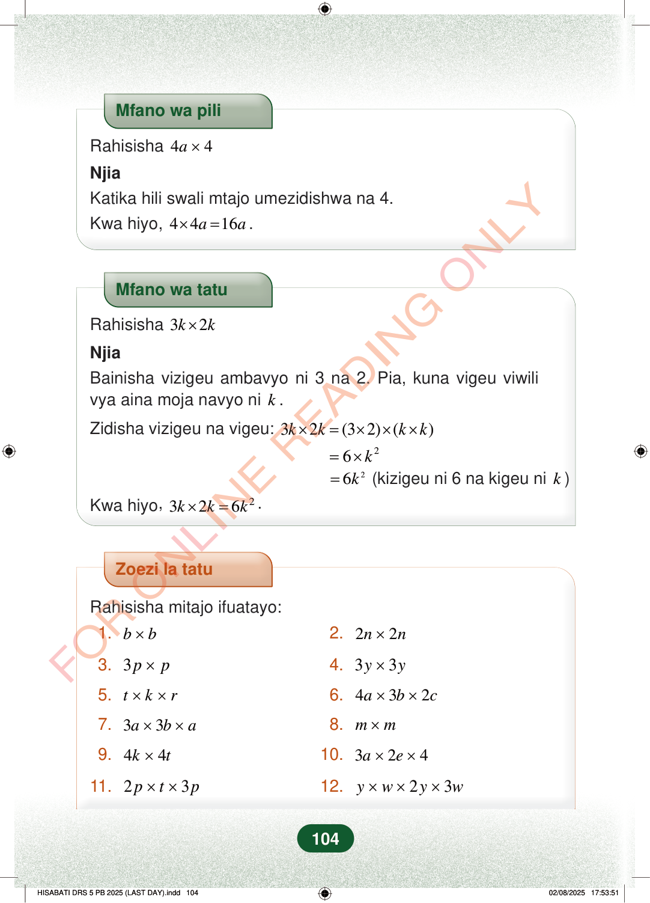

Mfano wa piliRahisisha44a×NjiaKatika hili swali mtajo umezidishwa na 4.Kwa hiyo,4416aa×=.Mfano wa tatuRahisisha32kk×NjiaBainisha vizigeu ambavyo ni 3 na 2. Pia, kuna vigeu viwilivya aina moja navyo nik.Zidisha vizigeu na vigeu:32(32)()kkkk×=×××26k=×26k=(kizigeu ni 6 na kigeu nik)Kwa hiyo,2326kkk×=.Zoezi la tatuRahisisha mitajo ifuatayo:1.bb×2.22nn×3.3pp×4.33yy×5.tkr××6.432abc××7.33aba××8.mm×9.44kt×10.324ae××11.23ptp××12.23ywyw×××104Mfano wa pili
Rahisisha 4 4 a ×
Njia Katika hili swali mtajo umezidishwa na 4. Kwa hiyo, 4 4 16 a a × = .
Mfano wa tatu
Rahisisha 3 2 k k ×
Njia Bainisha vizigeu ambavyo ni 3 na 2. Pia, kuna vigeu viwili vya aina moja navyo ni k .
Zidisha vizigeu na vigeu: 3 2 (3 2) ( ) k k k k × = × × ×
2 6 k = ×
2 6 k = (kizigeu ni 6 na kigeu ni k )
Kwa hiyo , 2 3 2 6 k k k × = .
Zoezi la tatu
Rahisisha mitajo ifuatayo:
1. b b × 2. 2 2 n n ×
3. 3 p p × 4. 3 3 y y ×
5. t k r × × 6. 4 3 2 a b c × ×
7. 3 3 a b a × × 8. m m ×
9. 4 4 k t × 10. 3 2 4 a e × ×
11. 2 3 p t p × × 12. 2 3 y w y w × × ×
104
Mfano wa piliRahisisha <math><mrow><mn>4</mn><mi>a</mi><mo>×</mo><mn>4</mn></mrow></math>NjiaKatika hili swali mtajo umezidishwa na 4.Kwa hiyo, <math><mrow><mn>4</mn><mo>×</mo><mn>4</mn><mi>a</mi><mo>=</mo><mn>16</mn><mi>a</mi></mrow></math>.Mfano wa tatu unaonyesha kurahisisha 3k × 2k. Njia inaanza kwa kubainisha vizigeu vya aina moja, yaani k na k.Mfano wa tatuRahisisha <math><mrow><mn>3</mn><mi>k</mi><mo>×</mo><mn>2</mn><mi>k</mi></mrow></math>NjiaBainisha vizigeu ambavyo ni 3 na 2.Pia, kuna vigeu viwili vya aina moja navyo ni <math><mi>k</mi></math>.Zidisha vizigeu na vigeu: <math><mrow><mn>3</mn><mi>k</mi><mo>×</mo><mn>2</mn><mi>k</mi><mo>=</mo><mrow><mo fence="true" form="prefix" stretchy="false">(</mo><mn>3</mn><mo>×</mo><mn>2</mn><mo fence="true" form="postfix" stretchy="false">)</mo></mrow><mo>×</mo><mrow><mo fence="true" form="prefix" stretchy="false">(</mo><mi>k</mi><mo>×</mo><mi>k</mi><mo fence="true" form="postfix" stretchy="false">)</mo></mrow></mrow></math><math><mrow><mo>=</mo><mn>6</mn><mo>×</mo><msup><mi>k</mi><mn>2</mn></msup></mrow></math><math><mrow><mo>=</mo><mn>6</mn><msup><mi>k</mi><mn>2</mn></msup></mrow></math> (kizigeu ni 6 na kigeu ni <math><mi>k</mi></math>)Kwa hiyo, <math><mrow><mn>3</mn><mi>k</mi><mo>×</mo><mn>2</mn><mi>k</mi><mo>=</mo><mn>6</mn><msup><mi>k</mi><mn>2</mn></msup></mrow></math>.Zoezi la tatuRahisisha mitajo ifuatayo:1.<math><mrow><mi>b</mi><mo>×</mo><mi>b</mi></mrow></math>3.<math><mrow><mn>3</mn><mi>p</mi><mo>×</mo><mi>p</mi></mrow></math>5.<math><mrow><mi>t</mi><mo>×</mo><mi>k</mi><mo>×</mo><mi>r</mi></mrow></math>7.<math><mrow><mn>3</mn><mi>a</mi><mo>×</mo><mn>3</mn><mi>b</mi><mo>×</mo><mi>a</mi></mrow></math>9.<math><mrow><mn>4</mn><mi>k</mi><mo>×</mo><mn>4</mn><mi>t</mi></mrow></math>11.<math><mrow><mn>2</mn><mi>p</mi><mo>×</mo><mi>t</mi><mo>×</mo><mn>3</mn><mi>p</mi></mrow></math>2.<math><mrow><mn>2</mn><mi>n</mi><mo>×</mo><mn>2</mn><mi>n</mi></mrow></math>4.<math><mrow><mn>3</mn><mi>y</mi><mo>×</mo><mn>3</mn><mi>y</mi></mrow></math>6.<math><mrow><mn>4</mn><mi>a</mi><mo>×</mo><mn>3</mn><mi>b</mi><mo>×</mo><mn>2</mn><mi>c</mi></mrow></math>8.<math><mrow><mi>m</mi><mo>×</mo><mi>m</mi></mrow></math>10.<math><mrow><mn>3</mn><mi>a</mi><mo>×</mo><mn>2</mn><mi>e</mi><mo>×</mo><mn>4</mn></mrow></math>12.<math><mrow><mi>y</mi><mo>×</mo><mi>w</mi><mo>×</mo><mn>2</mn><mi>y</mi><mo>×</mo><mn>3</mn><mi>w</mi></mrow></math>